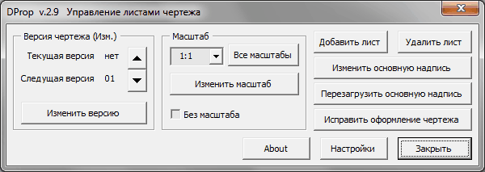
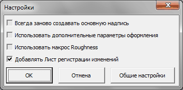
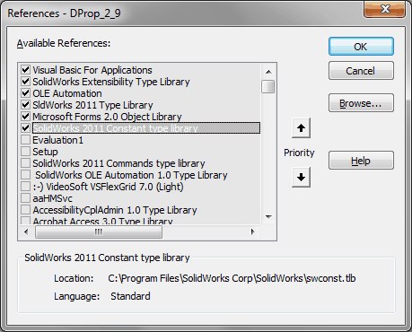

Макрос DProp |
Top Previous Next |
|
Макрос появился в первую очередь из-за необходимости раздельной нумерации листов сборочного чертежа и листов спецификации, находящихся в одном файле. Кроме этого, макрос предназначен для: 1.Управления версией чертежа; 2.Удобного управления масштабом листа; 3.Добавления листов чертежа; 4.Удаления листов чертежа; 5.Замены основной надписи; 6.Перезагрузки основной надписи; 7.Контроля версии основной надписи чертежа (отключаемая опция из меню Общие настройки); Листам чертежа присваиваются имена DRW1, DRW2 и т.д. Если ранее листы имели имена Лист1, Лист2 или Sheet1, Sheet2 и т.д. то они автоматически переименовываются. Количество листов чертежа указывается только для листов с именами DRW. Если лист имеет другое имя, то он игнорируется макросом.

qВерсия чертежа (Изм.) - Позволяет проставлять номер изменения для документа. Номер изменения заносится в свойство Revision и распространяется на все листы чертежа. Меняется стрелками. oТекущая версия - текущий № изменения. Либо "нет", если изменений не было. oСледующая версия - № изменения, который будет установлен при нажатии кнопки Изменить версию. oИзменить версию - вносит изменение в основную надпись чертежа. qМасштаб - Считывается с первого листа чертежа и устанавливается один для всех листов. oМасштаб - список основных масштабов oВсе масштабы - при нажатии кнопки список масштабов дополняется до полного. oИзменить масштаб - Применяет выбранный масштаб к чертежу oБез масштаба - Прочерк в графе масштаб основной надписи qДобавить лист - добавление нового листа чертежа. Запускается макрос Master. qУдалить лист - удаляет текущий лист чертежа. qИзменить основную надпись - изменение формата основной надписи. Запускается макрос Master. qПерезагрузить основную надпись - перезагрузка основной надписи из папки, указанной в настройках макроса Master. qИсправить оформление чертежа - запускает процедуру исправления чертежа. К чертежу применяются настройки из файла MyStandard.sldstd, перегружается основная надпись, обновляются свойства (запускается макрос MProp), исправляется шрифт примечаний. При установленной настройке Использовать макрос Roughness и наличии свойства Обработка, проставляется знак неуказанной шероховатости (запускается макрос Roughness). При установленной настройке Использовать дополнительные параметры оформления устанавливаются определенные настройки толщин линий. qНастройки - вызывает окно настроек (см. ниже). qЗакрыть - закрывает окно макроса.

Настройки сохраняются в файле DProp\DProp.ini.
qВсегда заново создавать основную надпись - если флажок выбран, то при нажатии кнопок Добавить лист или Изменить основную надпись и выборе нужного формата основной надписи, файл основной надписи будет сгенерен заново. При снятом флажке файл основной надписи (slddrt) будет генерится только при его отсутствии. qИспользовать дополнительные параметры оформления - отвечает за настройки толщин линий из Инструменты - Параметры - Свойства документа. При установленной галочке, при исправлении оформления старого чертежа помимо шрифтов будут установлены еще и эти параметры. qИспользовать макрос Roughness - При установленной галочке, при исправлении оформления старого чертежа будет проверятся свойство Обработка и если необходимо запускаться макрос Roughness. qДобавлять Лист регистрации изменений - делает то, что написано при количестве листов чертежа 3 и более. qОбщие настройки - вызов окна Общие настройки (см. пункт Установка и настройка) qОк - сохранение изменений в ini файл. qОтмена - выход без сохранения изменений.
Библиотеки:  |